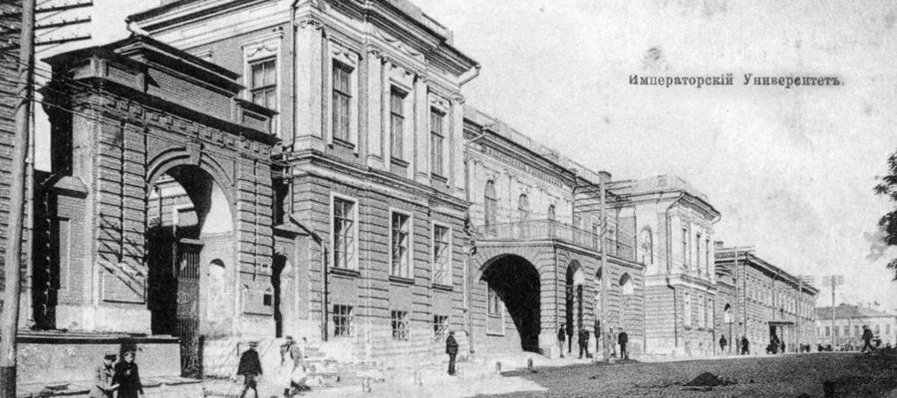
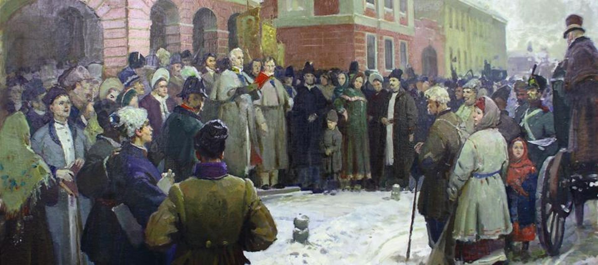
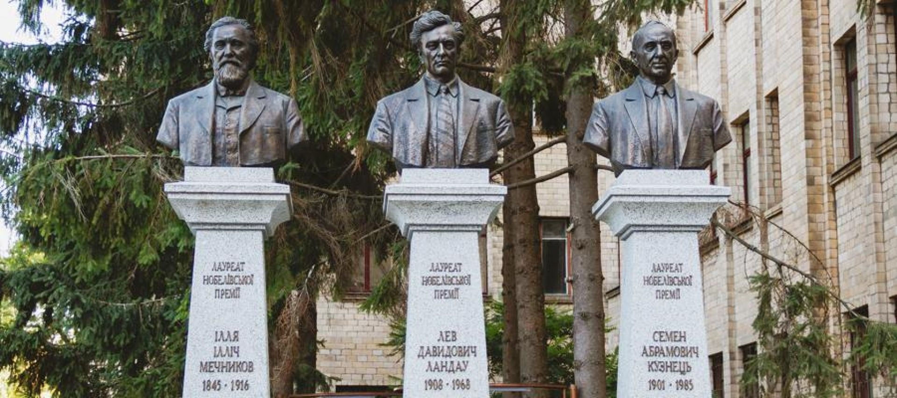
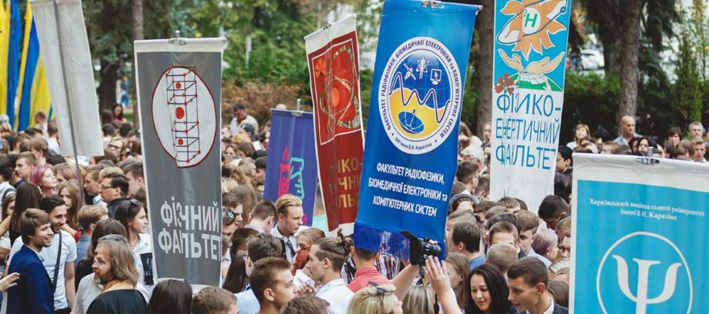
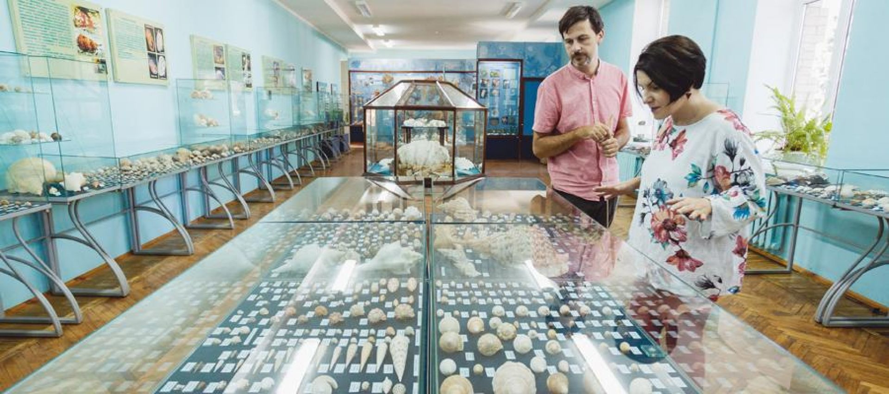

Kharkiv National University is one of the oldest universities in Eastern Europe. It was founded in November 1804 on the initiative of the outstanding educator V. N. Karazin, according to the charter of Alexander I.

The solemn opening of the university took place on January 29, 1805. The university wrote many bright pages in the history of the Ukrainian national revival of the 19th and 20th centuries, gave a powerful impetus to the transformation of Kharkiv into a great scientific and cultural center, the educational capital of Ukraine, rightfully occupies the highest ranks of all-Ukrainian rankings among classical universities and is well known far beyond the borders of Ukraine.
The history of Kharkiv National University is an inseparable part of the intellectual, cultural and spiritual history of Ukraine. The names of such world-famous scientists, scientists and educators as P. P. Gulak-Artemovsky, O. M. Lyapunov, M. I. Kostomarov, M. P. Barabashov, M. M. Beketov, D. I. Bagaliy, A. M. Krasnov, M. V. Ostrogradskyi, V. A. Steklov, O. O. Potebnia, O. V. Pogorelov and many, many others.

Kharkiv University is the only one in Ukraine where three Nobel laureates studied and worked: biologist Ilya Mechnikov, economist Semyon Kuznets, and physicist Lev Landau.
Prominent figures of science and culture of various countries were elected honorary members and honorary doctors of the university at different times: I. V. Goethe and O. Humboldt, Ivan Franko and Leo Tolstoy, P. P. Semenov-Tian-Shansky and others.
Mykhailo Hrushevskyi, the first president of Ukraine, is among the university's honorary doctors.
The publication of the first domestic newspapers and magazines, the creation of the first scientific societies, is connected with the university.
Over 130,000 people have graduated from the university over the years of its existence. The names of the students of the university are immortalized in geographical names, names of space objects, plants and minerals, laws and formulas. About 60 university graduates became full members and corresponding members of the National Academy of Sciences of Ukraine.

Currently, the university includes 20 faculties: biological; geology, geography, recreation and tourism; ecological; economic; foreign languages; historical; computer sciences; medical; mathematics and computer science; international economic relations and tourism business; psychology; radio physics, biomedical electronics and computer systems; sociological; physical and energetic; physical and technical; physical; philological; philosophical; chemical; legal. And also educational and scientific institute "Karazin School of Business".
There are 16,800 (or 20,300 people seeking education) students and trainees, 255 post-graduate students and doctoral students studying at the faculties, the Center for International Education, and the center for pre-university training. 440 doctors of science, professors, more than 1,242 candidates of science, associate professors participate in scientific research and personnel training. Among the employees of the university are 24 academicians and corresponding members of the National Academy of Sciences of Ukraine and branch academies.
Training of specialists at V. N. Karazin Kharkiv National University is carried out in 115 specialties and specializations, covering the entire spectrum of modern classical university education.
Every year, entrants become university students, among whom about 30% are medalists and 10% are prizewinners of the third and fourth stages of the All-Ukrainian Student Olympiads.
There are 20 academicians and corresponding members of the National Academy of Sciences and Galuze academies of Ukraine and 50 laureates of the Sovereign Prize at the university. Actively held over 20 all-world science schools, practicing 19 specializations from the defense of doctoral and candidate dissertations. About 60–65 monographs, collections of scientific works, over 2,000 articles and additional reports are published by the university, 20–25 international conferences are held.
The University is the leading scientific organization of many international space programs. The University of Science is supported by international programs with scientists from the USA, Canada, Russia, Germany, Turkey, China, Japan, Switzerland, Bulgaria, England and other countries of the world.
Since 1808, the university has had an astronomical observatory, which is one of the leading astronomical institutions of Ukraine, where fundamental and applied research on the physics of the Sun, planets, asteroids, comets and satellites is conducted.

The University Museum of Nature was founded in 1807 and is one of the oldest university museums in the world. More than 22,000 tourists visit the museum every year. The museum's 23 halls (with an area of 2,000 square meters) house about 250,000 exhibits in the following sections: the origin of man, Darwinism, zoology, geology. The University has a Museum of Archaeology, the collection of which includes about 150,000 storage units.
The Central Scientific Library of the Kharkiv National University was founded on January 30, 1805. According to the decision of the Ministry of Culture of Ukraine (1987), it is recognized as an institution of special public importance. The library's total stock includes 3.5 million copies, including 50,000 unique publications (17 incunabula, over 1,000 manuscripts, 300 paleotypes; lifetime editions of classics of world literature, science, and culture).
Since 2003, according to the Decree of the President of Ukraine, Kharkiv National University named after V. N. Karazin has the highest status of a self-governing (autonomous) state higher educational institution.
In February 2010, according to the Resolution of the Cabinet of Ministers of Ukraine, V. N. Karazin Kharkiv National University was granted the status of a research university.
Kharkiv National University named after V. N. Karazin carries out a broad program of international cooperation, is an active member of the international community of leading European and world universities. It carries out cooperation agreements with 61 partner organizations in 25 countries of the world.
The university is a co-founder of the Eurasian Association of Universities, a member of the World and European Associations of Universities, the Association of the European Network of Nuclear Education.
In November 2020, Kharkiv University celebrated the 216th anniversary of the signing of the Letter of Affirmation on its foundation, and in January 2020, it celebrated the 216th anniversary of its opening.